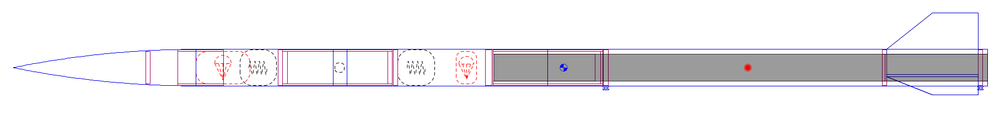

The objective of this project was to accurately predict stress values from the material interface properties and strain input dataset. Since there is a non-linear relationship in the stress-strain behavior, I built a methodology that is built around the selection and averaging of model output that can capture this kind of relationship.
I selected ensemble-learning models (bagging and boosting) for this project (Inspired by lecture 24/25) to achieve better predictive performance than any one of the learners could do alone. I chose random forest regressor (RF) and XGBoost (XGB) as bagging and boosting models, respectively. I decided to go with an RF modeling since they are relatively easy to train and good against overfitting. XGBoost was chosen, rather than the ADABoost, because it achieves better accuracy for structured numerical data since it is based on a Newton-Raphson method rather than gradient boosting like ADA. This allows for faster convergence, better handling of curvature for loss, and improves accuracy. By using both models, I believe that I can achieve robust and accurate results.
For model validation, I split the data into 5 sets and used k-fold cross-validation for both models. I used k=5 to provide a good balance between computational runtime and statistical reliability. I didn't want to go with lower k values to prevent high variance. Similarly I opted not to go with high k-values to prevent bias and excessive runtime. Since I wasn't sure of the relative sizing of the .json dataset compared to other training situations, I went with a happy medium of k=5. The combined model averages all the predictions made by the RF and XGB models. This helps balance out any errors made by one model and improves individual model strengths.
